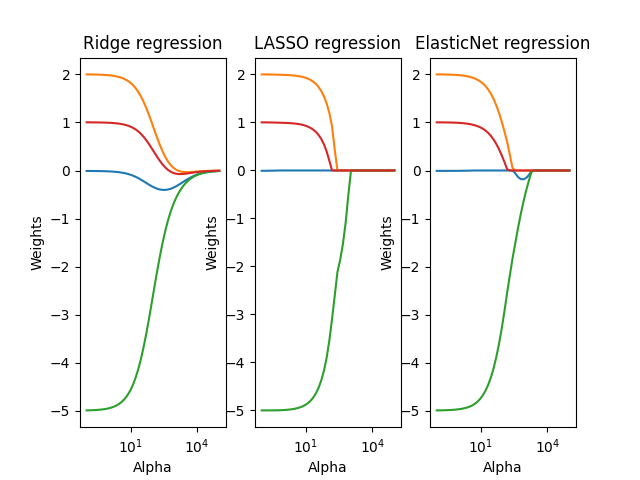

Note
Go to the end to download the full example code.
Regularization Path for Ridge, LASSO, and ElasticNet Regression
This script demonstrates the effect of L1 (LASSO), L2 (Ridge), and ElasticNet regularization on regression coefficients. It generates a 3D synthetic dataset and fits different models with varying alpha (regularization strength), tracking the weight paths.
import torch
import matplotlib.pyplot as plt
from math import log10
from DLL.MachineLearning.SupervisedLearning.LinearModels import LASSORegression, RidgeRegression, ElasticNetRegression
from DLL.DeepLearning.Optimisers import ADAM
n = 10
x1 = torch.linspace(0, 1, n)
x2 = torch.linspace(0, 1, n)
x3 = torch.linspace(0, 1, n)
XX1, XX2, XX3 = torch.meshgrid(x1, x2, x3, indexing="xy")
X = torch.stack((XX1.flatten(), XX2.flatten(), XX3.flatten()), dim=1)
y = 2 * XX1.flatten() - 5 * XX2.flatten() + 1 * XX3.flatten() + 0.1 * torch.normal(0, 1, size=XX1.flatten().size())
weights = []
alphas = torch.logspace(log10(1e-1), log10(1e5), 50).tolist()
for alpha in alphas:
model = RidgeRegression(alpha=alpha)
model.fit(X, y)
weights.append(model.beta.tolist())
weights = torch.tensor(weights)
fig, axes = plt.subplots(1, 3)
for row in weights.T:
axes[0].semilogx(alphas, row)
axes[0].set_title("Ridge regression")
axes[0].set_xlabel("Alpha")
axes[0].set_ylabel("Weights")
weights_lasso = []
weight_elasticnet = []
for alpha in alphas:
model = LASSORegression(alpha=alpha)
model.fit(X, y, epochs=50)
weights_lasso.append([model.weights.tolist()])
model = ElasticNetRegression(alpha=alpha, l1_ratio=0.5)
model.fit(X, y, epochs=50)
weight_elasticnet.append([model.weights.tolist()])
weights_lasso = torch.tensor(weights_lasso).squeeze()
weight_elasticnet = torch.tensor(weight_elasticnet).squeeze()
for row in weights_lasso.T:
axes[1].semilogx(alphas, row)
axes[1].set_title("LASSO regression")
axes[1].set_xlabel("Alpha")
axes[1].set_ylabel("Weights")
for row in weight_elasticnet.T:
axes[2].semilogx(alphas, row)
axes[2].set_title("ElasticNet regression")
axes[2].set_xlabel("Alpha")
axes[2].set_ylabel("Weights")
plt.show()
Total running time of the script: (0 minutes 1.397 seconds)